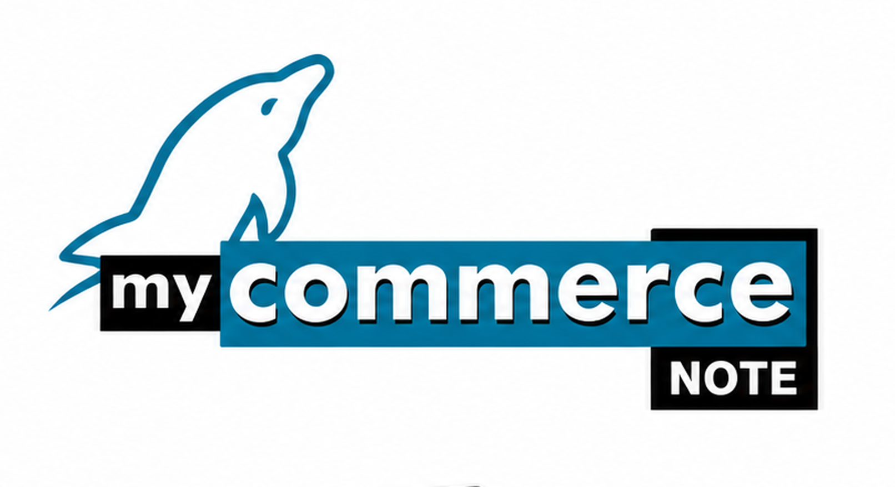

MyCommerce Note
Automação de força de vendas e mobilidade para representantes
MyCommerce Note
Aplicativo de Automação de Força de Vendas foi idealizado como uma ferramenta de produtividade para o processo de vendas das empresas. A maximização do tempo disponível para que os Vendedores percorram suas rotas de visita e agilidade na realização do Pedido de Venda, constitui o foco principal do produto.
O aplicativo de Automação de Força de Vendas é executado em equipamento autônomo, independente de conexões com a matriz ou filial, sendo as transferências de dados realizadas periodicamente através de mecanismos disponibilizados pela Internet.
Com uma mini-base de dados local o Representante é capaz de consultar informações importantes para a realização dos seus trabalhos, tais como: Lista de Preço, Promoções, Clientes, Débitos e Vendas.

Informações
O ponto chave nesta arquitetura é a mobilidade do Vendedor, que realiza suas principais atividades sem necessidade de conexão ou presença na empresa, através de um sistema com base de dados auto-suficiente e em modo off-line.
Sincronismo
- Via Internet: Torna possível realizar o sincronismo de vários vendedores ao mesmo tempo.
- Via Cabo: Conectado ao Computador por Cabo/Infra-Rede, realiza somente um sincronismo por vez.
- Via Modem: O aparelho disca para um número pré-definido na empresa, o qual estará conectado ao Computador permitindo somente um sincronismo por vez.
Adaptação
O MyCommerce Note é de fácil integração a qualquer sistema de gestão que a empresa já utiliza, pois seu sincronismo é feito por arquivos do tipo .txt, com layout pré-definido, dando uma maior flexibilidade para o sistema de gestão gerar somente os dados que deseja transferir para o aparelho, agilizando o processo de sincronismo.
Compatibilidade
Equipamentos notebooks e netbooks em geral
Sistemas operacionais
Windows XP ou Superior
Compras
A gestão de compras é o maior fator estratégico nos negócios, focalizando o volume de recursos financeiros. A Função desta atividade é interagir com todas as ferramentas e os departamentos de sua empresa. Para isso o MyCommerce disponbiliza:
- Entrada de Mercadorias
- Cotações com vários fornecedores
- Gerenciamento de Pedidos de compras
- Lista de Faltas
- Relatório de compras com base nas vendas
- Relatório de Produtos sobressalentes no estoque
- Projeção financeira para compras
- Lançamento automático da NF-e de entrada.